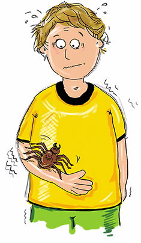

Die Kiba-Studie - Infos für Kinder
Ich bin ein Angsthase!
Wir Angsthasen haben es manchmal gar nicht
so leicht,
weil wir vor vielen Dingen richtig große Angst haben.
Manche von uns haben Angst vor bestimmten Tieren oder Situationen.
Andere haben Angst alleine zu Hause zu bleiben oder alleine im
Bett zu schlafen.
Wieder andere haben große Angst mit fremden
Kindern oder Erwachsenen zu reden, weil sie Angst haben, dass sie
etwas Peinliches machen könnten oder die anderen schlecht über sie
denken könnten.
Und vielen Kindern geht es ganz genauso.


Aber: Viele dieser Ängste kann
man überwinden
und besiegen.
Manchmal sind die Ängste aber so stark, dass man die Hilfe eines
Therapeuten braucht, der dir zeigt, wo die Angst Schwachstellen hat
und wie man sie besiegen kann. Das ist aber manchmal gar nicht so
einfach.
Deshalb helfe ich den Forschern und
Psychologen, die in ganz Deutschland daran arbeiten, Ängste besser
zu verstehen und die Behandlung von Ängsten bei Kindern noch
wirkungsvoller zu machen.
Im „KibA“-Projekt möchten wir dir helfen deine
Ängste zu besiegen. Dabei möchten wir auch herausfinden, welche
Rolle die Eltern in der Behandlung von Ängsten spielen. Außerdem
interessiert uns, wie der Körper auf Ängste reagiert. Dafür besteht
unser Projekt aus zwei Studien, einer
Therapiestudie und einer
Laborstudie.
Dabei kannst du uns helfen! Denn du bist ja sozusagen der
Experte für deine Ängste!
Wir laden dich herzlich dazu ein, dir einmal mit uns auf dieser
Homepage unsere Arbeit anzuschauen.

In der Therapiestudie helfen wir dir, deine
Ängste zu besiegen.
Um dir richtig helfen zu können, möchten wir zuerst so viel wie
möglich über deine Ängste erfahren. Dafür laden wir dich und auch
deine Eltern zu einem Interview-Termin ein und bitten euch mehrere
Fragebögen auszufüllen. In einem anschließenden Gespräch erklären
wir euch, was wir in den Interviews herausgefunden haben. Falls ihr
euch dann Hilfe wünscht, und unser Behandlungsangebot passt, freuen
wir uns, dich und deine Eltern in die Studie aufzunehmen.
Nach diesen Untersuchungen gibt es eine kurze Wartezeit und dann
kann es endlich losgehen. Du gehst
regelmäßig
zu deiner Therapeutin, die dir helfen wird, mit deiner Angst besser
klar zu kommen. Zuerst wirst du einiges zum Thema Angst und über
deine Angsterkrankung erfahren. Die Therapeutin bespricht
beispielsweise mit dir, wie du deine ängstlichen Gefühle erkennen
kannst.
Gemeinsam werdet ihr anschauen, was du tun
kannst, damit deine Angst kleiner wird. Anhand von
Spielen, Rätseln
und Übungen lernst du
Schritt für Schritt, deine Angst zu besiegen. In der Therapie und
später auch zu Hause werdet ihr ganz nach dem Motto „Übung macht den Meister“ trainieren, die Angst zu besiegen.
In unserer Studie vergleichen wir zwei gut funktionierende
Therapieprogramme miteinander:
• Im ersten Programm arbeitet die Therapeutin
immer mit dir alleine
• Im zweiten Programm
immer mit
dir und

deinen Eltern gemeinsam.
An welchem Programm ihr teilnehmt, wird per
Zufall vor Beginn ausgelost.
Nach der Behandlung und 6 Monate später laden wir dich und deine
Eltern dann nochmal ein um zu schauen, wie erfolgreich und wirksam
unsere Behandlung gegen die Angst war. Dafür wiederholen wir das
Interview und geben euch nochmal Fragebögen.
Wie du siehst sind wir ganz schön neugierig und möchten viel wissen
- aber nur so können wir daran arbeiten, auch anderen Kindern mit
den gleichen Problemen noch besser zu helfen.
Die
Laborstudie
In
der Laborstudie möchten wir an zwei Tagen untersuchen, wie du und
dein Körper auf verschiedene neue Situationen reagieren. Dazu kleben
wir dir kleine Messfühler an. Das tut überhaupt nicht weh, sondern
kitzelt manchmal sogar ein bisschen. Dann möchten wir bei zwei
Computer-Aufgaben schauen, was in deinem Körper so vorgeht.
Im Hausmeisterspiel kannst Du mit einer
Computerbrille mehrere Räume in einer virtuellen Welt erkunden. In
der Lern-Vergessens-Aufgabe siehst du verschiedene
Bilder von Gesichtern auf einem Bildschirm. In beiden Aufgaben hörst
du an bestimmten Stellen ein unangenehmes Geräusch. Dabei möchten
wir schauen, was in deinem Körper passiert, während du die Räume
erkundest und die Bilder anschaust.